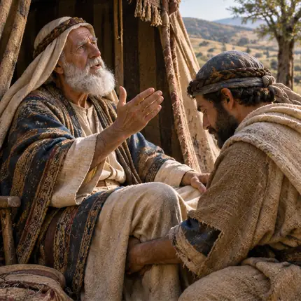
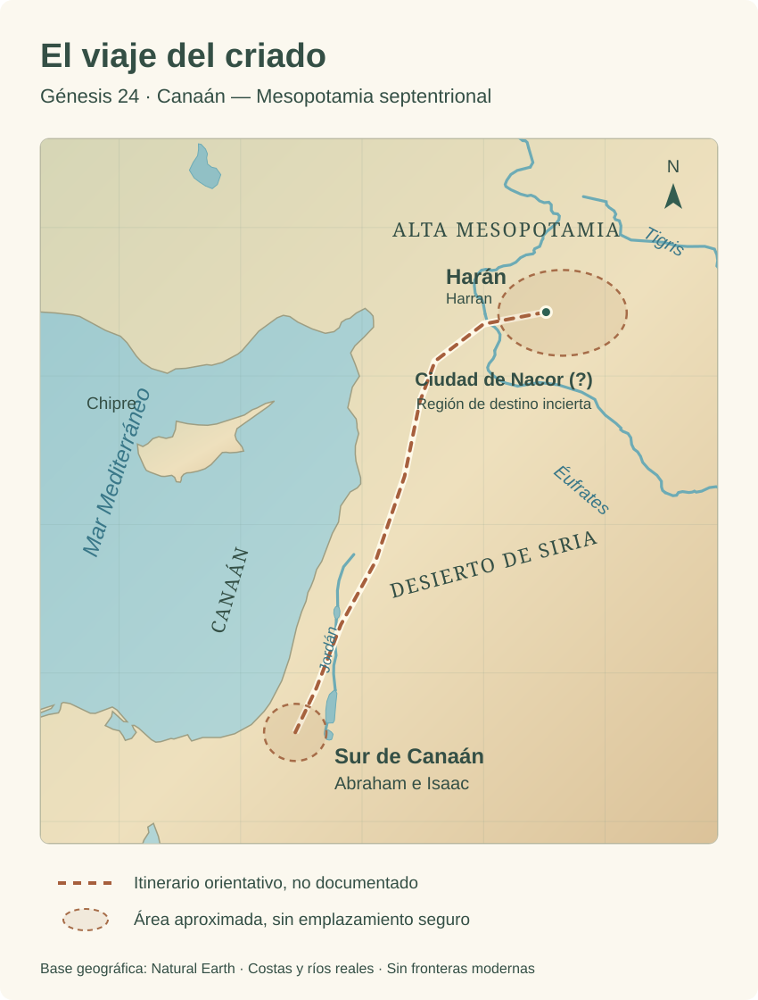
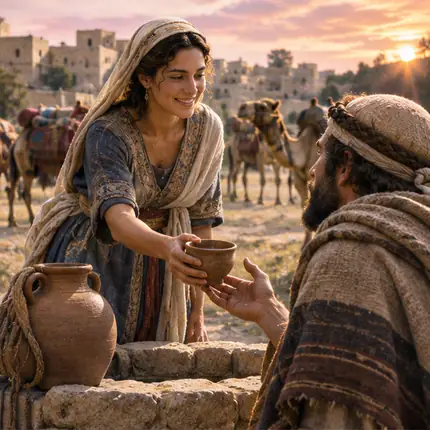
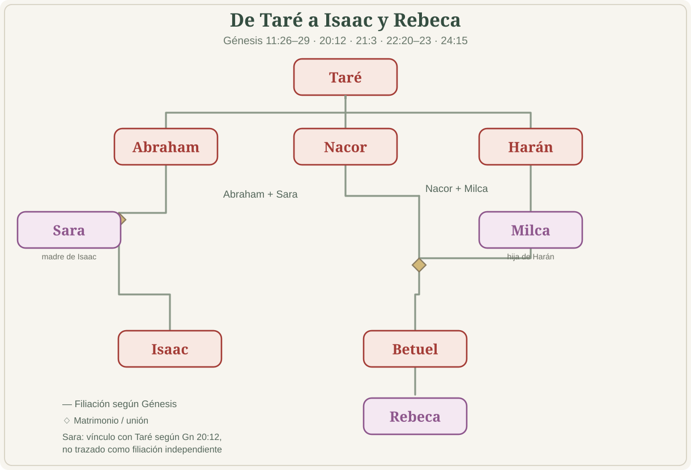
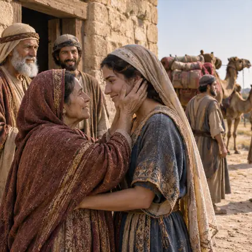
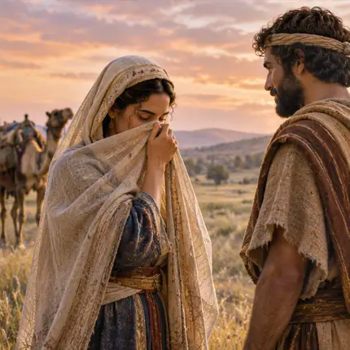

24:1 Era Abraham ya viejo, y bien avanzado en años; y Jehová había bendecido a Abraham en todo.
24:2 Y dijo Abraham a un criado suyo145, el más viejo de su casa, que era el que gobernaba en todo lo que tenía: — Pon ahora tu mano debajo de mi muslo,
24:3 y te juramentaré por Jehová, Dios de los cielos y Dios de la tierra, que no tomarás para mi hijo mujer de las hijas de los cananeos, entre los cuales yo habito;
24:4 sino que irás a mi tierra y a mi parentela, y tomarás mujer para mi hijo Isaac.
24:5 El criado le respondió: — Quizá la mujer no querrá venir en pos de mí a esta tierra. ¿Volveré, pues, tu hijo a la tierra de donde saliste?
24:6 Y Abraham le dijo: — Guárdate que no vuelvas a mi hijo allá.
24:7 Jehová, Dios de los cielos, que me tomó de la casa de mi padre y de la tierra de mi parentela, y me habló y me juró, diciendo: A tu descendencia daré esta tierra; él enviará su ángel delante de ti, y tú traerás de allá mujer para mi hijo.
24:8 Y si la mujer no quisiere venir en pos de ti, serás libre de este mi juramento; solamente que no vuelvas allá a mi hijo.
24:9 Entonces el criado puso su mano debajo del muslo de Abraham su señor, y le juró sobre este negocio.146

24:10 Y el criado tomó diez camellos de los camellos de su señor, y se fue, tomando toda clase de regalos escogidos de su señor; y puesto en camino, llegó a Mesopotamia, a la ciudad de Nacor.
24:11 E hizo arrodillar los camellos fuera de la ciudad, junto a un pozo de agua, a la hora de la tarde, la hora en que salen las doncellas por agua.
24:12 Y dijo: — Oh Jehová, Dios de mi señor Abraham, dame, te ruego, el tener hoy buen encuentro, y haz misericordia con mi señor Abraham.
24:13 He aquí yo estoy junto a la fuente de agua, y las hijas de los varones de esta ciudad salen por agua.
24:14 Sea, pues, que la doncella a quien yo dijere: Baja tu cántaro, te ruego, para que yo beba, y ella respondiere: Bebe, y también daré de beber a tus camellos; que sea esta la que tú has destinado para tu siervo Isaac; y en esto conoceré que habrás hecho misericordia con mi señor.

24:15 Y aconteció que antes que él acabase de hablar, he aquí Rebeca, que había nacido a Betuel, hijo de Milca mujer de Nacor hermano de Abraham, la cual salía con su cántaro sobre su hombro.
24:16 Y la doncella era de aspecto muy hermoso, virgen, a la que varón no había conocido; la cual descendió a la fuente, y llenó su cántaro, y se volvía.
24:17 Entonces el criado corrió hacia ella, y dijo: — Te ruego que me des a beber un poco de agua de tu cántaro.
24:18 Ella respondió: — Bebe, señor mío; y se dio prisa a bajar su cántaro sobre su mano, y le dio a beber.
24:19 Y cuando acabó de darle de beber, dijo: — También para tus camellos sacaré agua, hasta que acaben de beber.
24:20 Y se dio prisa, y vació su cántaro en la pila, y corrió otra vez al pozo para sacar agua, y sacó para todos sus camellos.
24:21 Y el hombre estaba maravillado de ella, callando, para saber si Jehová había prosperado su viaje, o no.
24:22 Y cuando los camellos acabaron de beber, le dio el hombre un pendiente de oro que pesaba medio siclo, y dos brazaletes que pesaban diez,
24:23 y dijo: — ¿De quién eres hija? Te ruego que me digas: ¿hay en casa de tu padre lugar donde posemos?
24:24 Y ella respondió: — Soy hija de Betuel hijo de Milca, el cual ella dio a luz a Nacor.
24:25 Y añadió: — También hay en nuestra casa paja y mucho forraje, y lugar para posar.
24:26 El hombre entonces se inclinó, y adoró a Jehová,
24:27 y dijo: — Bendito sea Jehová, Dios de mi amo Abraham, que no apartó de mi amo su misericordia y su verdad, guiándome Jehová en el camino a casa de los hermanos de mi amo.

24:28 Y la doncella corrió, e hizo saber en casa de su madre estas cosas.
24:29 Y Rebeca tenía un hermano que se llamaba Labán, el cual corrió afuera hacia el hombre, a la fuente.
24:30 Y cuando vio el pendiente y los brazaletes en las manos de su hermana, que decía: Así me habló aquel hombre, vino a él; y he aquí que estaba con los camellos junto a la fuente.
24:31 Y le dijo: — Ven, bendito de Jehová; ¿por qué estás fuera? He preparado la casa, y el lugar para los camellos.
24:32 Entonces el hombre vino a casa, y Labán desató los camellos; y les dio paja y forraje, y agua para lavar los pies de él, y los pies de los hombres que con él venían.
24:33 Y le pusieron delante qué comer; mas él dijo: — No comeré hasta que haya dicho mi mensaje. Y él le dijo: — Habla.
24:34 Entonces dijo: — Yo soy criado de Abraham.
24:35 Y Jehová ha bendecido mucho a mi amo, y él se ha engrandecido; y le ha dado ovejas y vacas, plata y oro, siervos y siervas, camellos y asnos.
24:36 Y Sara, mujer de mi amo, dio a luz en su vejez un hijo a mi señor, quien le ha dado a él todo cuanto tiene.
24:37 Y mi amo me hizo jurar, diciendo: No tomarás para mi hijo mujer de las hijas de los cananeos, en cuya tierra habito;
24:38 sino que irás a la casa de mi padre y a mi parentela, y tomarás mujer para mi hijo.
24:39 Y yo dije: Quizá la mujer no querrá seguirme.
24:40 Entonces él me respondió: Jehová, en cuya presencia he andado, enviará su ángel contigo, y prosperará tu camino; y tomarás para mi hijo mujer de mi familia y de la casa de mi padre.
24:41 Entonces serás libre de mi juramento, cuando hayas llegado a mi familia; y si no te la dieren, serás libre de mi juramento.
24:42 Llegué, pues, hoy a la fuente, y dije: Jehová, Dios de mi señor Abraham, si tú prosperas ahora mi camino por el cual ando,
24:43 he aquí yo estoy junto a la fuente de agua; sea, pues, que la doncella que saliere por agua, a la cual dijere: Dame de beber, te ruego, un poco de agua de tu cántaro,
24:44 y ella me respondiere: Bebe tú, y también para tus camellos sacaré agua; sea esta la mujer que destinó Jehová para el hijo de mi señor.
24:45 Antes que acabase de hablar en mi corazón, he aquí Rebeca, que salía con su cántaro sobre su hombro; y descendió a la fuente, y sacó agua; y le dije: — Te ruego que me des de beber.
24:46 Y bajó prontamente su cántaro de encima de sí, y dijo: Bebe, y también a tus camellos daré de beber. Y bebí, y dio también de beber a mis camellos.
24:47 Entonces le pregunté, y dije: ¿De quién eres hija? Y ella respondió: Hija de Betuel hijo de Nacor, que le dio a luz Milca. Entonces le puse un pendiente en su nariz, y brazaletes en sus brazos;
24:48 y me incliné y adoré a Jehová, y bendije a Jehová Dios de mi señor Abraham, que me había guiado por camino de verdad para tomar la hija del hermano de mi señor para su hijo.
24:49 Ahora, pues, si vosotros hacéis misericordia y verdad con mi señor, declarádmelo; y si no, declarádmelo; y me iré a la diestra o a la siniestra.

24:50 Entonces Labán y Betuel respondieron y dijeron: — De Jehová ha salido esto; no podemos hablarte malo ni bueno.
24:51 He ahí Rebeca delante de ti; tómala y vete, y sea mujer del hijo de tu señor, como lo ha dicho Jehová.
24:52 Cuando el criado de Abraham oyó sus palabras, se inclinó en tierra ante Jehová.
24:53 Y sacó el criado alhajas de plata y alhajas de oro, y vestidos, y dio a Rebeca; también dio cosas preciosas a su hermano y a su madre.147
24:54 Y comieron y bebieron él y los varones que venían con él, y durmieron; y levantándose de mañana, dijo: — Enviadme a mi señor.
24:55 Entonces respondieron su hermano y su madre: — Espere la doncella con nosotros a lo menos diez días, y después irá.148
24:56 Y él les dijo: — No me detengáis, ya que Jehová ha prosperado mi camino; despachadme para que me vaya a mi señor.
24:57 Ellos respondieron entonces: — Llamemos a la doncella y preguntémosle.
24:58 Y llamaron a Rebeca, y le dijeron: — ¿Irás tú con este varón? Y ella respondió: — Sí, iré.149

24:59 Entonces dejaron ir a Rebeca su hermana, y a su nodriza, y al criado de Abraham y a sus hombres.
24:60 Y bendijeron a Rebeca, y le dijeron: — Hermana nuestra, sé madre de millares de millares, y posean tus descendientes la puerta de sus enemigos.150
24:61 Entonces se levantó Rebeca y sus doncellas, y montaron en los camellos, y siguieron al hombre; y el criado tomó a Rebeca, y se fue.
24:62 Y venía Isaac del pozo del Viviente-que-me-ve; porque él habitaba en el Neguev.151
24:63 Y había salido Isaac a meditar al campo, a la hora de la tarde; y alzando sus ojos miró, y he aquí los camellos que venían.152
24:64 Rebeca también alzó sus ojos, y vio a Isaac, y descendió del camello;
24:65 porque había preguntado al criado: — ¿Quién es este varón que viene por el campo hacia nosotros? Y el criado había respondido: — Este es mi señor. Ella entonces tomó el velo, y se cubrió.153
24:66 Entonces el criado contó a Isaac todo lo que había hecho.
24:67 Y la trajo Isaac a la tienda de su madre Sara, y tomó a Rebeca por mujer, y la amó; y se consoló Isaac después de la muerte de su madre.

Notas del editor
- 145El texto no identifica por nombre al criado de Abraham, aunque lo presenta como el principal administrador de su casa. Tradicionalmente se le ha identificado con Eliezer de Damasco, mencionado en Génesis 15:2. Sin embargo, la narración no confirma expresamente que se trate de la misma persona. ↩
- 146La colocación de la mano bajo el muslo era un gesto solemne vinculado al juramento, mencionado también en Génesis 47:29. Su significado exacto es discutido. Una interpretación considera que expresaba sumisión a la autoridad. Otras utilizan el término "muslo" como eufemismo de una parte más céntrica de la anatomía y la interpretación se relaciona con la circuncisión, señal del pacto entre Dios y Abraham, o con un juramento sobre la descendencia. Existían rituales parecidos en otras sociedades contemporáneas. ↩
- 147Los regalos entregados por el criado de Abraham podrían corresponder a una costumbre matrimonial habitual en el antiguo Israel y otras sociedades del Medio Oriente. Además de la dote, que aportaba la familia de la novia y podía constituir su patrimonio personal, existía el mōhar, una prestación que el novio o su familia entregaban a la familia de la novia para formalizar el compromiso matrimonial. Algunos investigadores interpretan los regalos a Labán y a la madre de Rebeca como esta prestación, mientras que las joyas y vestidos entregados directamente a Rebeca podrían haber formado parte de su patrimonio matrimonial. Sin embargo, el texto no identifica expresamente estos regalos con ninguna institución jurídica concreta. ↩
- 148La expresión hebrea utilizada en Génesis 24:55, literalmente «días o diez», es de interpretación discutida. Habitualmente se entiende que la familia solicita unos diez días, aunque la tradición rabínica la interpreta como «un año o diez meses», relacionándola con el periodo concedido a una prometida para preparar su matrimonio. Algunos investigadores consideran posible que la petición respondiera a costumbres matrimoniales que requerían tiempo entre el compromiso y la partida de la novia. Otros la interpretan como un intento de Labán de retrasar el acuerdo por intereses familiares o económicos. ↩
- 149Curiosamente, Rebeca no es preguntada sobre si acepta su matrimonio con Isaac pero es consultada para resolver el desacuerdo sobre la partida. ↩
- 150La bendición dirigida a Rebeca reproduce casi literalmente la promesa hecha por Dios a Abraham en Génesis 22:17. La «puerta» representaba el principal punto defensivo de una ciudad y también donde se realizaban trámites judiciales o administrativos (como la compra de Macpela), de modo que «poseer la puerta de los enemigos» significaba conquistar o dominar sus ciudades. Algunos estudiosos relacionan esta expresión con la mención de Jesús a las «puertas del Hades» de Mateo 16:18, entendiéndolo como una victoria sobre el poder de la muerte. ↩
- 151
- 152El verbo hebreo lāśûaḥ, traducido aquí como «meditar», aparece únicamente en este versículo y su significado exacto es discutido. Se ha interpretado como «meditar», «orar» o «pasear». La tradición judía ha relacionado este pasaje con la oración de la tarde, mientras que algunas traducciones modernas prefieren describir simplemente a Isaac caminando por el campo. ↩
- 153La palabra hebrea ṣāʿîf, traducida como «velo», designaba una prenda que podía cubrir la cabeza y posiblemente el rostro. Aparece también en Génesis 38:14 y 38:19, cuando Tamar la utiliza para ocultar su identidad. Aunque las prendas para cubrir la cabeza eran conocidas en el Medio Oriente, no hay pruebas de que las mujeres hebreas llevasen habitualmente el rostro cubierto. El hecho de que Rebeca se cubra únicamente al reconocer a Isaac sugiere que se trataba de un gesto relacionado con las costumbres matrimoniales o de modestia ante su futuro esposo. ↩